Noves tendències en l'acoblament d'equips microinformàtics
El mercat de components per a PC clònics ha estat durant molts anys limitat als ordinadors de taula (desktop computers) i més concretament a l’interior d’aquests ordinadors. Hi ha un gran nombre de fabricants que ofereix components que podem assemblar sempre que ens n’assegurem de la compatibilitat:
- Plaques base.
- Processadors.
- Dispositius d’emmagatzematge magnètic (discos durs).
- Unitats òptiques (CD/DVD i unitats Blu-ray).
- Lectors de targetes múltiples (xD, SD, MMC, CF…).
- Diversitat de targetes d’ampliació (PCI/PCI-E/USB/Firewire):
- targetes de xarxa i sense fils,
- targetes gràfiques,
- targetes de so.
- Monitors.
- Teclats diversos.
- Dispositius apuntadors (ratolins, ratolins tàctils [touchpad]).
- Fonts d’alimentació.
- Dissipadors i ventiladors.
Les noves tendències apunten cap a una varietat més gran tant en els components interns com en els corresponents a l’aparença exterior. Podeu trobar:
- Carcasses.
- Eines per fer modificacions estètiques.
Encara que totes aquestes possibles modificacions van adreçades majoritàriament als ordinadors de taula, els ordinadors portàtils s’han incorporat a aquest segment de mercat, ja que és possible modificar-ne alguns components que anteriorment anaven integrats amb el sistema i eren molt difícils de substituir en cas d’avaria o de necessitat de millora de les prestacions. Els components més habituals que es poden substituir o ampliar en un portàtil són els següents:
- Adaptador de corrent.
- Bateria.
- Memòria RAM.
- Disc dur.
- Unitats òptiques.
- Lectors de targetes múltiples.
- Targetes d’ampliació (PCMCIA/USB):
- mòdem telefònic,
- targeta sense fils o de xarxa,
- sintonitzador de TV,
- adaptador Bluetooth,
- adaptador d’infrarojos.
Malgrat no ser tant comú, atesa la dificultat que comporta canviar-los, també és possible trobar recanvis d’altres components fonamentals com:
- Monitor LCD.
- Teclat de portàtil.
Com podeu veure, la major parts de components d’un ordinador portàtil són també reemplaçables, si exceptuem els components fonamentals del sistema, com ara la placa base o el processador. En alguns casos, és possible actualitzar el processador o la targeta gràfica interna a un model de més prestacions, però difícilment els costos de mà d’obra i de components faran que surti a compte aquesta modificació, atès que els preus del maquinari premuntat actual són molt baixos.
El factor de forma ens permet diferenciar els tipus d’ordinadors que es poden trobar actualment.
El factor de forma d’un ordinador es pot definir relacionant-lo amb el factor de forma de la placa base i amb la mida exterior.
El factor de forma de la placa base defineix les seves característiques bàsiques pel que fa a la capacitat de connexió amb altres components, incloses la mida i la forma, la situació dels components, la posició dels ancoratges i el tipus de fonts d’alimentació que cal utilitzar.
La mida i el factor de forma d’un ordinador de taula també en limitaran les prestacions tècniques, encara que no sempre es tracta d’un factor determinant (hi pot haver dispositius de mida reduïda amb una potència de processament considerable). Pel que fa als ordinadors portàtils, també veureu la diferència de prestacions entre les diferents mides existents, i també la classificació que se n’ha fet amb relació a l’ús a què estan destinats.
Evolució de l'estètica dels ordinadors
Les carcasses contenen els components de l’ordinador i són, normalment, d’acer, de plàstic o d’alumini. També les podreu trobar fetes amb altres materials, com ara la fusta o el polimetilmetacrilat per a caixes de disseny i sovint, també, de metall electrogalvanitzat.
L’any 1971, Intel va fabricar el primer microprocessador, el 4004, que va obrir als ordinadors el camí de les llars. També hi van participar Apple Computer (1976) i, més endavant, Commodore i Tandy (1977). La història de la carcassa comença, doncs, amb aquests ordinadors.
La carcassa, també coneguda com a torre, caixa de PC o xassís, té la funció de protegir els components de l’ordinador.
Amiga 1000 Commodore va dotar els seus ordinadors d’un únic bloc en què hi havia el teclat i el lector de cintes magnètiques. El TRS80 de Tandy va afegir una televisió separada i connectada amb un cable. L’ordinador d’Apple va ser comercialitzat en petites quantitats i sense caixa.
Després d’aquesta primera temptativa, la major part dels ordinadors va seguir la línia d’incloure el teclat a la caixa. Commodore i Thomson van obrir les portes l’any 1982 amb el VIC20 i el famós TO7. Van sorgir altres celebritats, com Oric, Amstrad i, més endavant, Amiga. Només el Macintosh 128k va continuar en la mateixa línia d’incloure el monitor a la caixa.
- 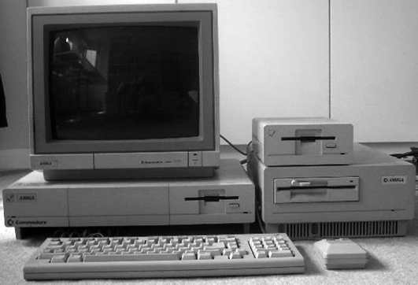
- Amiga 1000 de Commodore h. 1985
En la tercera generació de l’evolució, amb la intervenció d’Amiga 1000 el 1985, es van inaugurar les caixes d’escriptori. Aquest nou tipus de disseny durarà molt de temps, ja que es trobarà en la majoria dels equips fins als anys 1992-1993. Es presenta com una carcassa separada del teclat per un cable i del monitor. Va ser concebuda per reposar sobre la taula, col·locar-hi la pantalla al damunt i acollir els dispositius extraïbles (disquets de 5 ¼“ i de 3 ½”).
L’evolució posterior, que encara perdura avui dia, va col·locar la carcassa de manera vertical: la torre. Aquest fet en va permetre augmentar la mida considerablement i col·locar els dispositius de lectura perpendiculars a la carcassa amb un aprofitament més gran de l’espai per a la seva col·locació.
Cap a la dècada de 1990, les caixes solien tenir una forma rectangular i normalment eren de color beix. El 1998, Apple va apostar per carcasses amb dissenys i colors més estètics, i fins i tot en va arribar a reduir la mida. De llavors ençà, les companyies fabriquen carcasses més agradables a la vista. Des de l’any 2007 les caixes més venudes són de color negre o gris metal·litzat.
L’augment del soroll perquè tenen més prestacions i la necessitat consegüent de més ventilació van obrir una nova òptica a l’evolució de les carcasses. A les caixes, s’hi va anar afegint espai per tal d’agregar ventiladors, cada vegada més i més grans.
La personalització de PC (modding)) consisteix a donar un estil més artístic a les carcasses, que freqüentment incorpora accessoris innovadors per cridar l’atenció. Ja a l’inici del 2000 es van afegir panells transparents o finestres per poder veure l’interior del PC. Els aficionats a la personalització del PC inclouen LED interns, colors cridaners o refrigeració per aigua en els equips.
L’estètica de les interfícies del sistema operatiu també ha evolucionat amb el maquinari. Vegeu els recursos de contingut del web del mòdul.
Els adhesius són comuns en les carcasses i mostren el processador intern o el sistema operatiu per al qual han estat dissenyades.
Les carcasses d'ordinadors
Podem trobar alguns paràmetres comuns que defineixen la funcionalitat de tot tipus de carcasses, i també la seva connectivitat amb dispositius externs.
La carcassa és el factor definidor més gran del factor de forma de l’ordinador i ens indicarà en molts casos la utilitat a la qual està destinat l’equip.
En el panell frontal trobareu una sèrie d’elements comuns, com són els botons d’encesa i reinici, i LED que indiquen l’estat d’encès de la màquina, l’ús del disc i l’activitat de xarxa, i també diversos compartiments per a les unitats de disc de 3 ½“ i de 5 ¼”.
Al frontal de l’ordinador antic de la figura (esquerra), hi ha l’interruptor d’alimentació, els polsadors de reinici i de turbo (que ja no s’utilitza), la pantalla (display) indicadora de velocitat (que tampoc no es fa servir actualment), la clau de bloqueig del teclat (obsoleta també) i els LED d’encesa, de lectura/escriptura del disc dur i de turbo. A l’ordinador nou (dreta) podeu veure només els polsadors d’encesa i de reinici, i els indicadors d’encesa i del disc dur. Hi ha, però, connectors USB i d’àudio que faciliten la connexió de determinats elements per la part frontal de l’ordinador.
- 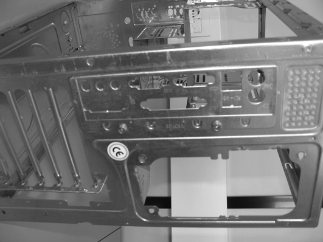
- Detall del panell posterior d'una carcassa ATX sense cap element connectat
En algunes carcasses antigues si podien veure botons de turbo que limitaven l’ús de la CPU i que ja no s’utilitzen. En les noves, hi podeu veure panells als quals es poden connectar dispositius més moderns com ara USB, Firewire IEEE 1394, auriculars i micròfons (figura). També hi podeu veure pantalles LCD que indiquen la velocitat del microprocessador, la temperatura, l’hora del sistema, etc. Tots aquests dispositius s’han de connectar a la placa base per obtenir la informació.
La part posterior de la carcassa acostuma a tenir un aspecte similar al d’aquest model ATX d’ordinador que mostra la figura. S’hi observa el connector d’alimentació a 220 V, la sortida d’alimentació a 220 V pel monitor i el ventilador de la font d’alimentació (es tracta d’un ordinador amb la placa base, la font d’alimentació i determinades targetes d’expansió ja connectades). També hi podeu observar els espais reservats a les targetes d’expansió i el panell que conté els forats per al teclat, el ratolí, la impressora, els ports USB, etc., i que se subministra juntament amb la placa base.
En la majoria dels casos, quan es parla d’un ordinador ens referim al model de taula, que ens acompanya des de fa molts anys a les cases i és el que té una capacitat més gran d’ajustar-se a unes necessitats determinades. Podem trobar diversos tipus de carcasses per a dispositius d’aquest tipus que es diferencien tant per l’aspecte exterior com per les prestacions de capacitat de processament, connexió i potència consumida que inclouen.
L'exterior
En general, com més gran sigui la caixa, més espai tindreu per afegir-hi dispositius. De la mateixa manera, si trieu un contenidor de mida gran, el vostre ordinador tindrà un pes considerable, ocuparà més espai i, per tant, serà més difícil de moure. Així, doncs, la tria d’aquest paràmetre la determinaran les necessitats que tingueu sobre si l’ordinador no ha de ser mogut sota cap concepte i si es disposa de l’espai necessari.
Podeu trobar ressenyes de tot tipus de caixes en els recursos de contingut del web del mòdul.
El factor de forma de la caixa fa referència a la forma i a la mida generals de la caixa, i varia des de les grans torres amb una gran quantitat d’espai per a futures ampliacions, fins a caixes mini-ITX d’una mida realment compacta.
Hi ha diferents versions de la carcassa o caixa de la unitat central d’un ordinador personal. Aquestes versions són les següents:
1) Torre o gran torre
És la carcassa més gran. Aquestes carcasses, també conegudes com a torres de mida completa (full tower), són molt àmplies. Això permet disposar de molt espai per a l’expansió: normalment quatre o cinc compartiments per a dispositius de 5 ¼“, i cinc o sis compartiments de 3 ½”, d’alimentació, els discos o les targetes d’expansió. Afegir ampliacions resulta molt més fàcil, ja que els cables i els components no se sobreposen els uns als altres com passa a les caixes de mida més petita. Malgrat aquests avantatges, aquest tipus de caixa és molt pesada, ocupa molt d’espai al lloc de treball i requereix dispositius de ventilació més eficients per refrigerar una caixa de mida gran.
- 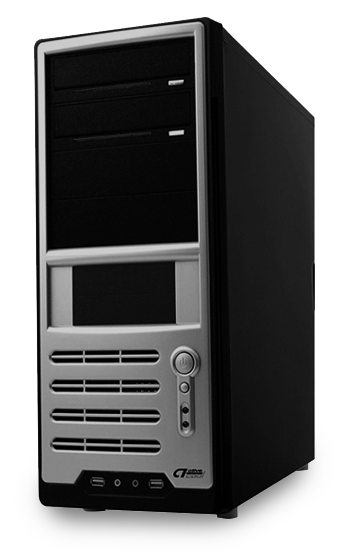
- Exterior d'una caixa de semitorre
2) Mitja torre o semitorre
Aquest és el tipus de caixa més comú, ja que dóna un bon compromís entre mida i capacitat d’expansió. És a dir, una semitorre de mida estàndard és prou gran perquè hi hagi espai per a una expansió futura (normalment tres o quatre compartiments de 5 ¼“ i també tres o quatre de 3 ½”) i també ens ofereix un lloc de treball intern no gaire atapeït. A la vegada, té una mida prou petita per tenir una bona mobilitat si l’hem de traslladar. Les semitorres també accepten les fonts d’alimentació i les plaques base més comunes i, per tant, permeten molta flexibilitat a l’hora de dissenyar o actualitzar un sistema.
3) Minitorre
També s’acostuma a anomenar microtorre . És un factor de forma molt adequat si no es disposa de gaire espai per col·locar l’ordinador. L’alçada típica és d’unes 9“ (22,86 cm). Les minitorres són petites i lleugeres, i, per tant, es poden encabir a qualsevol lloc. Fou el factor de forma escollit per crear els primers centres multimèdia destinats a les sales d’estar, ja que no necessiten tanta refrigeració com els equips d’una mida més gran. Un dels seus inconvenients és que no es disposen de gaire espai per a l’expansió dels components. Normalment una minitorre disposa d’un o dos compartiments per a unitats de 5 ¼” (CD-ROM, DVD, etc.) i de dos o tres compartiments de 3 ½“ (disquetera de 3 ½”, lector de targetes, etc.) A més, treballar dins una carcassa de minitorre és més complicat per les limitacions d’espai i requereix habilitat del tècnic. La mida també limita el tipus de placa base que hi podeu posar, que pot ser micro-ATX o mini-ITX. De totes maneres, segons el tipus de placa base, encara hi ha marge per a les ampliacions i disposa de connectivitat adequada (USB, Firewire, Ethernet i sense fil).
4) Barebone
La caixa de tipus barebone (figura) és un cas particular de les microtorres que se sol classificar a part en raó de les seves especificitats. A l’hora d’adquirir aquest tipus de caixes notareu que la caixa ja porta integrada una placa base adequada i una font d’alimentació capaç de subministrar energia als components que cal muntar. El tècnic s’haurà d’encarregar de muntar (i adquirir) un processador adequat, mòduls de RAM, dispositius d’emmagatzematge i connectivitat sense fil, si no la porta la placa, i també els perifèrics corresponents. En el fet que no s’hagi adaptat aquest format a altres factors de forma de caixes cal veure raons comercials i de muntatge. Resulta complicat muntar la font d’alimentació i la placa en caixes d’aquesta mida, i això pot explicar per què les venen ja muntades, però tot i així permeten la configuració personalitzada pel que fa als altres components. El disseny ha estat un dels factors que s’ha tingut més en compte en aquest tipus de caixes, ja que en molts casos estan pensades per situar-les a llocs d’oci i funcionar com a reproductors multimèdia. En aquest sentit també és important que la targeta de so tingui bona connectivitat de canals d’àudio si el que es vol és muntar un cinema domèstic (home cinema).
El problema de les caixes barebone és que l’expansió es fa complicada perquè tenen poca capacitat d’ampliació. Cal assegurar-se, a l’hora de muntar-les, que les especificacions són les adequades.
Cinema domèstic...
… és un sistema de reproducció de vídeo d’alta definició amb capacitats multicanal d’àudio (normalment Dolby Digital 5.1).
La connectivitat de les caixes també barebone té en compte el fet de disposar de moltes opcions de connectivitat externa (connectors USB), ja que en el cas de no poder ampliar la caixa internament, tanmateix és possible fer-ho mitjançant dispositius externs com ara un disc USB o una memòria flaix.
5) Taula
La denominació de sobretaula o taula es refereix a un tipus de caixa en què la principal diferència respecte a una semitorre és la posició horitzontal en lloc de vertical (figura). Com a desavantatge es pot dir que la maniobrabilitat a l’hora de substituir components no és tan bona, ja que a més de tenir menys grossor, els mecanismes d’obertura de la carcassa són més complicats que en un model semitorre. L’aparició de carcasses de mida més petita i la generalització dels monitors de TFT ha fet que perdi la utilitat inicial, però encara n’hi ha, d’aquests models, sobretot per a oficines o llocs de treball.
6) Servidor
Els home theatre PC de taula o sobretaula...
… han estat molt utilitzats en entorns empresarials i el seu avantatge és que es pot posar el monitor a sobre de la caixa; d’aquesta manera, s’estalvia espai a l’escriptori.
Les caixes destinades a servidors tenen alguna particularitat que val la pena assenyalar. Solen ser caixes més amples que les altres i no fan concessions a l’estètica, ja que l’important en aquest cas només és el rendiment adequat (figura). El seu disseny es basa en l’eficiència i els perifèrics no són la prioritat més important, sinó el rendiment i la ventilació. Solen tenir més d’una font d’alimentació d’extracció en calent, perquè no caigui el servidor en cas que se n’espatlli una, i normalment estan connectades a un SAI que protegeix els equips dels pics de tensió i aconsegueix que, en cas de caiguda de la xarxa elèctrica, el servidor continuï funcionant durant un temps limitat.
Cada cop és més normal...
… trobar els servidors amb una carcassa de tipus bastidor (rack). Es tracta d’un altre tipus de suport per als components, que es cargolen a un moble dissenyat específicament per muntar-hi aquest tipus d’ordinadors i panells de connexió de xarxa.
7) HTPC (home theater PC)
Les inicials en anglès signifiquen ordinador personal de cinema a casa. Aquest tipus de caixa és molt proper a una semitorre pel que fa al factor de forma. Malgrat això, una caixa d’HTPC està dissenyada per col·locar-la en posició horitzontal, com la caixa de tipus sobretaula. Aquesta semblança, però, no vol dir que el disseny sigui el mateix, sinó tot el contrari. Un HTPC no sembla realment un ordinador personal, sinó més aviat un reproductor de vídeo o qualsevol component d’aquest tipus que podríem trobar a un sala d’estar. La idea és construir un ordinador per usar-lo com a centre del nostre oci multimèdia, i el fet de fer servir aquest tipus de caixa serà més adient estèticament amb la resta de components d’alta fidelitat i de vídeo de la casa.
8) Caixes mini-ITX
- 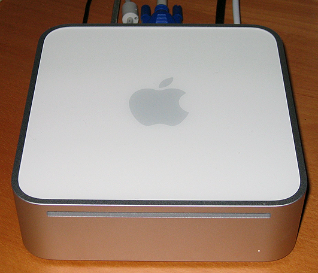
En aquest tipus de caixes, per regla general, hi podreu afegir una unitat òptica de tipus slim (les utilitzades en ordinadors portàtils), un disc dur de 2 ½“ i potser alguna targeta d’ampliació. Com veieu, no hi ha molt espai per a l’ampliació, però es poden muntar màquines d’una potència gens menyspreable, a l’espai que ocupa un diccionari d’anglès.
El Mac mini...
… va ser un dels primers ordinadors de prestacions elevades però amb una mida molt reduïda.
Un nettop és un ordinador d’escriptori de mida petita, baix preu i consum d’energia reduït, dissenyat per fer tasques bàsiques com ara navegar per Internet, utilitzar aplicacions en línia, fer tasques ofimàtiques i reproduir continguts d’àudio i de vídeo. Aquest tipus d’equip utilitzarà plaques base de mida reduïda com la mini-ITX.
A més de les ITX...
… hi ha altres plaques de mida molt reduïda com flex-ATX, mini-DTX o la diminuta pico-ITX (10 x 7,2 cm).
Alguns nettops consumeixen 8 watts de potència, mentre que un ordinador normal de taula pot arribar als 100 watts amb facilitat. Habitualment, el consum tan baix d’energia es deu a la utilització de processadors i de plaques base que inicialment han estat dissenyats per a portàtils. Es tracta de sistemes que no necessiten ventilador per al processador i la font d’alimentació és externa com als portàtils. Per totes aquestes causes, la potència de processament és baixa i no són adequats per a aplicacions que necessitin recursos elevats.
Exemples de nettops són el Linutop 1, el CherryPal, el Zonbu Mini U o l’ASUS Eee Box.
9) All in one
Un ordinador all-in-one o tot en un és un PC que inclou en una sola carcassa tots els components tradicionalment separats en la caixa i el monitor.
En l’època dels ordinadors domèstics de 8 bits això era prou comú. Molts ordinadors incloïen els components fonamentals i el teclat en una sola carcassa. D’altres tenien també una petita pantalla a més del teclat i, per tant, es disposava d’un ordinador “tot en un”. A mesura que la potència dels components va augmentar, aquest tipus d’ordinadors va caure en desús en favor dels dissenys basats en caixa + monitor + teclat.
La tendència actual de miniaturització ha permès que es tornin a construir equips amb els components integrats, aprofitant els components dissenyats inicialment per a ordinadors portàtils. El producte que té més èxit en aquest camp ha estat l’Apple iMac (figura), que en els seus primers models integrava el monitor CRT amb la placa base i la resta de components. Actualment, amb els monitors plans de TFT altres fabricants han seguit la via que Apple va obrir i ofereixen ordinadors que integren monitor i components de l’ordinador en un espai molt reduït (el teclat i el ratolí es deixen a part per comoditat).
- 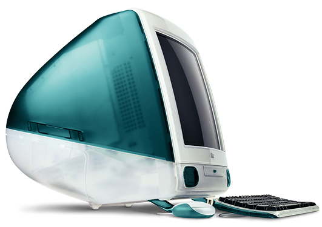
- L'iMac G3 d'Apple va significar el resorgiment dels equips integrats.
Així, doncs, els ordinadors all-in-one es poden considerar un model més d’ordinador domèstic, però amb la diferència que utilitzen components de baix consum energètic, els quals, a més, es poden muntar a una mida reduïda, i, per tant, ofereixen una potència de processament no tan elevada. A més, com que la caixa és més complicada d’obrir, resulten més difícils d’actualitzar i, evidentment, és més complicat modificar-ne els components.
Els darrers models d’ordinadors Apple iMac de monitors plans de TFT són un exemple d’ordinadors all-in-one que inclouen tots els components integrats i ocupen poc espai.
Es poden considerar com a un tipus d’ordinador all-in-one els quioscos d’Internet que trobem als llocs públics o als cibercafès i que permeten navegar per la Xarxa i habitualment disposen d’una pantalla tàctil.
L'interior
Interiorment, les carcasses tenen els mateixos elements que són, bàsicament, la caixa per a la font d’alimentació, els compartiments per a les unitats de 5 ¼” i 3 ½“, i el suport per a la placa base, però cal distingir entre els diversos tipus AT (obsolet), ATX i els formats derivats (micro-ATX, BTX) o d’altres, com mini-ITX.
- 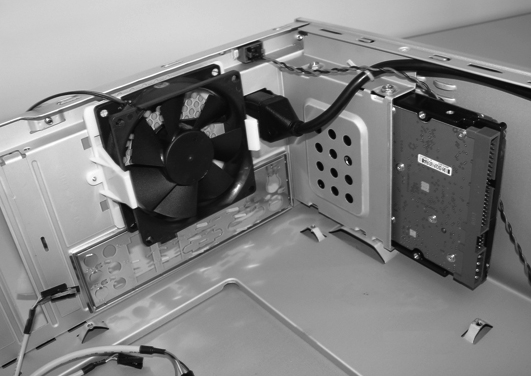
- Detall del ventilador i del suport per al disc dur
La diferència entre ells està en els connectors d’alimentació, la disposició de la connexió i la mida de la placa, factors que defineixen el factor de forma utilitzat. Cada placa base hauria de subministrar la connexió correcta per poder encaixar correctament a les caixes, encara que en la major part dels casos la caixa ja inclou els cables adequats per utilitzar plaques ATX i els seus derivats.
- 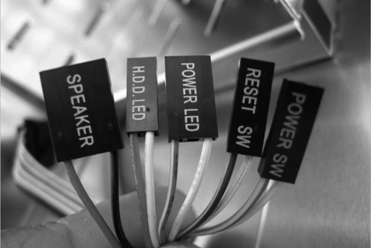
- Connectors del panell de la carcassa
- 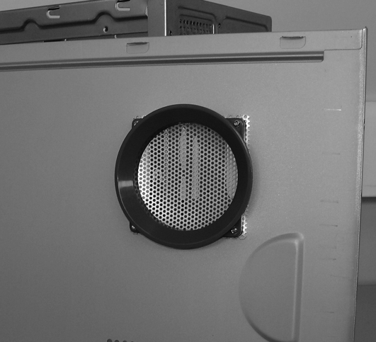
- Detall de les ranures de ventilació per a la CPU
Les plaques base solen estar cargolades al fons o a una banda de la part interna de la carcassa, depenent de la mida i l’orientació. Disposen de ranures d’expansió i connectors externs per connectar-hi tot tipus d’ampliacions per al sistema. Les fonts d’alimentació solen estar col·locades a la part posterior, subjectades per quatre cargols (excepte en alguns models d’ordinador de taula que van col·locades en el panell frontal).
En la taula trobareu un resum dels connectors del panell de la carcassa d’un PC amb les característiques més significatives.
| Nom del connector | Potes | Color | Funció |
|---|---|---|---|
| Polsador d’encesa (POWER SW) | 1 | Negre | Encesa |
| 2 | Blanc | Massa | |
| Polsador de reinici (RESET SW) | 1 | Negre | Reset |
| 2 | Blanc | Massa | |
| Connector de l’altaveu intern (SPEAKER) | 1 | Vermell | Senyal |
| 2 | |||
| 3 | |||
| 4 | Negre | +5V | |
| LED del disc dur (HDD LED) | 1 | Vermell | Ànode |
| 2 | Blanc | Càtode | |
| LED d’encesa (POWER LED) | 1 | Vermell | Ànode |
| 2 | Blanc | Càtode | |
| LED de mode hibernació (SLEEP LED) | 1 | Taronja | Càtode |
| 2 | Blanc | Ànode | |
| Interruptor d’hibernació (SLEEP SW) | 1 | Taronja | Senyal |
| 2 | Negre | Massa | |
| Turbo LED (LED TB) (obsolet) | 1 | Groc | Càtode |
| 2 | Blanc | Ànode | |
| Commutador de turbo (TURBO SW) (obsolet) | 1 | Negre | Turbo |
| 2 | Blanc | Massa | |
| 3 | Taronja | Normal | |
| Bloqueig de teclat/ratolí PS/2 i LED | 1 | ||
| d’encesa( keylock power LED) (poc comú) | 2 | ||
| 3 | Blanc | Massa | |
| 4 | Blau | Bloqueig | |
| 5 | Blanc | Massa |
Si al panell frontal de l’ordinador hi ha connectors USB, connectors d’àudio o de qualsevol altre tipus, hi trobareu també els connectors corresponents que haureu de connectar a la placa base, seguint les especificacions de la placa (figura).
Tenir net l’interior del PC és molt important perquè, si la pols s’acumula als ventiladors, pot reduir la ventilació i perjudicar greument el funcionament de l’ordinador.
Tot i semblar complicat, el muntatge d’un PC és força senzill si es llegeixen les instruccions de cadascun dels elements que el componen.
La font d'alimentació
- 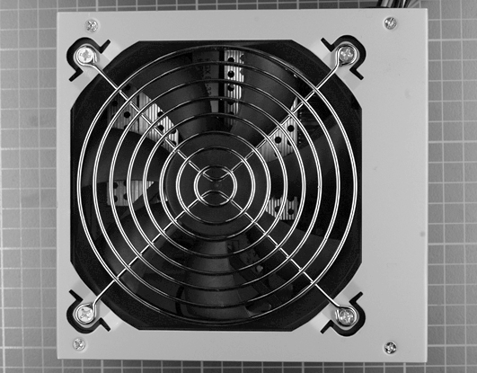
- Detall del ventilador
La font d’alimentació és l’encarregada de subministrar el voltatge continu necessari per a cadascun dels elements que es connecten a l’ordinador, i també la intensitat que necessiten. Rep una tensió alterna de 230 V i 50 Hz de la xarxa de distribució elèctrica i la transforma en una tensió contínua de +5, -5, +12, -12 i +3,3 V (aquesta última només en els models ATX). A part dels circuits electrònics necessaris per rectificar i estabilitzar la tensió alterna, la font d’alimentació també disposa d’un petit ventilador que refrigera els components i evita que puguin arribar a assolir temperatures excessivament elevades que podrien fer-los malbé (figura).
- 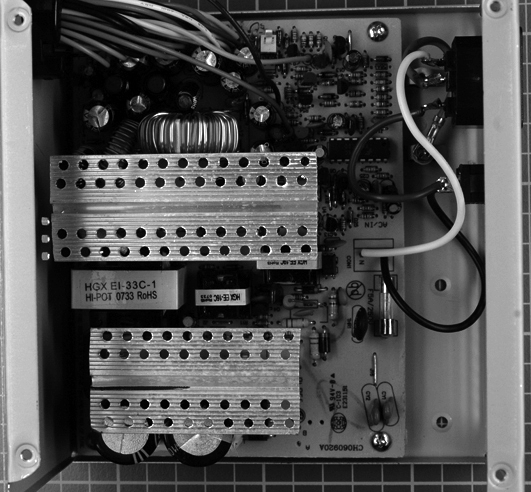
- Interior d'una font d'alimentació
Els dos tipus de fonts que us podeu trobar quan obriu un ordinador de taula poden ser: AT o ATX (o micro-ATX). Les fonts d’alimentació AT es van utilitzar fins que va aparèixer el Pentium MMX, moment en què es van començar a utilitzar fonts d’alimentació ATX. Els connectors a placa base utilitzats a les fonts AT varien dels utilitzats a les fonts ATX i són més perillosos, ja que la font s’activa per un interruptor, en el qual hi ha un voltatge de 230 V, amb el risc que això representa a l’hora de manipular el PC.
Les fonts ATX disposen d’un botó connectat a la placa base, la qual s’encarrega d’encendre la font; això ens permet fer connexions/desconnexions per programari.
La font ATX sempre és activa i, encara que l’ordinador no estigui encès, sempre l’alimenta una tensió petita en estat d’espera.
- 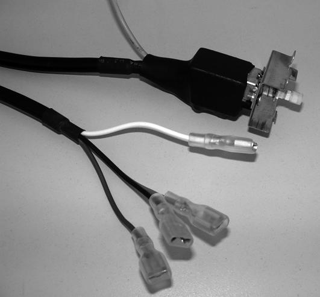
- Cables d'alimentació d'una font AT
En principi, la font d’alimentació ve com una part fixa de la carcassa de l’ordinador. Si l’haguéssim d’instal·lar, n’hi hauria prou a col·locar-la al buit de la carcassa destinat a aquest efecte, posar els cargols de la part posterior i connectar els diversos cables d’alimentació. En el mateix costat en què està situat el ventilador, també hi ha l’endoll del cable que va connectat a la xarxa elèctrica. Aquest endoll mascle té tres connexions: per dues es rep l’energia elèctrica i per la tercera, la central, es rep la línia de terra. Al costat d’aquest connector, hi acostuma a haver un altre connector femella que, amb les mateixes connexions, és utilitzat per prolongar l’alimentació fins al monitor: no és que la font d’alimentació treballi per al monitor, sinó que simplement prolonga l’endoll de la paret fins a aquest punt, de manera que el monitor es pot endollar indistintament aquí o a l’endoll de la paret.
Sistemes operatius domèstics
En els ordinadors domèstics s’ha donat tota una evolució des dels sistemes operatius basats en consola de comandaments fins als entorns gràfics amb efectes 3D de què es disposa en l’actualitat. Aquests canvis s’han produït en tot moment lligats als canvis de maquinari, i a la resposta que els productors de programari han anat donant a l’aparició de noves màquines. Encara que no sempre el sistema operatiu més venut ha estat el més eficient, podem trobar diferents sistemes que s’utilitzen avui dia encara, per bé que la major part del mercat se l’enduu, sense dubte, el gegant de Redmont, Microsoft, amb el seu producte estrella Windows.
Windows
Windows és el nom d’un sistema operatiu desenvolupat per Microsoft de mitjan la dècada de 1980, pensat per a ordinadors personals. En l’actualitat, Windows, que en en anglès significa “finestres”, és el sistema operatiu més utilitzat en ordinadors personals i en entorns corporatius, i també té un sector important del mercat de servidors en què els grans dominadors són els sistemes Unix.
Inicialment, Windows era un entorn gràfic d’usuari que s’executava sobre del sistema operatiu DOS. Paral·lelament, es va crear una versió professional per a servidors que no necessitava DOS, era el Windows NT. A partir de Windows 95, la versió personal ja era un sistema operatiu complet i no necessitava DOS, sistema que de fet estava incorporat dins de Windows. Aquesta estructura es va continuar fent servir fins a l’aparició del Windows XP.
Les versions de Windows utilitzades encara actualment són:
Bill Gates...
… és un dels homes més rics del món gràcies al sistema operatiu Windows.
- Windows 2000. Va aparèixer l’any 2000 i encara s’utilitza en algunes empreses que no han necessitat actualitzar-se.
- Windows XP. Es va publicar l’any 2001 i estava disponible en les versions Home i Professional. Encara és instal·lat en una gran quantitat d’ordinadors, malgrat que Microsoft ja només hi dóna suport a l’ús en els netbooks.
- Windows Vista. Va aparèixer el 2006 i ha donat una sèrie de problemes de rendiment que n’han retardat l’acceptació entre els usuaris. Es ven en vuit edicions, en total, domèstiques i de negocis, i també en versions de 32 o 64 bits.
- Windows 7. Versió del sistema operatiu aparegut el 2009 (figura). El nou sistema mira de solucionar alguns dels problemes d’imatge empresarial que va donar Vista, mitjançant un rendiment millorat i la consolidació dels efectes gràfics d’escriptori. S’ha simplificat el nombre d’edicions altre cop, que van des de la Home fins a la més completa, l’Ultimate.
GNU/Linux
Malgrat el seu creixement, el sector d’ordinadors domèstics amb Linux instal·lat és molt petit si es compara amb el competidor Windows. La comunitat Linux és, però, molt activa i les distribucions actuals de Linux permeten un ús totalment funcional dels ordinadors. Un sector en què aquest sistema operatiu s’ha introduït amb força és els dels netbooks i nettops, ja que els seus baixos requeriments de potència permeten muntar ordinadors totalment operatius amb requeriments de maquinari molt baixos.
El sistema Windows 7, o Windows Seven, inclou capacitats millorades per a la interacció tàctil amb l’ordinador.
Vegeu a les adreces d’interès del web del mòdul l’associació catalana d’usaris de GNU/Linux (CALIU).
Linux o GNU/Linux és el sistema operatiu format pel nucli del sistema Linux, juntament amb les utilitats GNU. És un sistema gratuït i desenvolupat per la comunitat d’usuaris.
El nucli (kernel) de Linux va ser creat per Linux Torvalds, l’any 1991, que es va basar en els seus coneixements dels sistema operatiu Minix i els va adaptar a ordinadors Intel 386. Les utilitats GNU, necessàries per tenir un sistema operatiu complet, tenen l’origen en el projecte de Richard Stallman de crear un sistema operatiu lliure, la Free Software Foundation, que va començar el 1983. L’èxit del sistema es deu al treball col·laboratiu de programadors d’arreu del món, els quals es van sumar a la crida que Linus Torvalds va fer després de publicar la primera versió del nucli del sistema operatiu.
El sistema Linux (o GNU/Linux) es pot aconseguir mitjançant distribucions (en teniu un exemple en la figura) que s’actualitzen amb regularitat. Algunes de les més comunes són SuSE, Mandriva, RedHat, Ubuntu, MintLinux, Debian, Knoppix, Puppy…
Linus Torvalds (a dalt) i Richard Stallman...
… són considerats els artífexs del sistema operatiu GNU/Linux.
Depenent de les seves característiques (que són gestionades per empreses privades o per la comunitat) incorporen diferents escriptoris, gestors de paquets o aplicacions en el paquet que es fa arribar a l’usuari. El sistema operatiu universal Debian és una de les distribucions de Linux amb més tradició i més usuaris a la comunitat.
Mac OS
El sistema operatiu Mac OS s’utilitza en ordinadors Apple Macintosh, que té un sector d’usuaris petit però fidel repartits arreu del món, i ha rebut una bona embranzida gràcies a l’adopció de la plataforma Intel per l’empresa Apple.
- 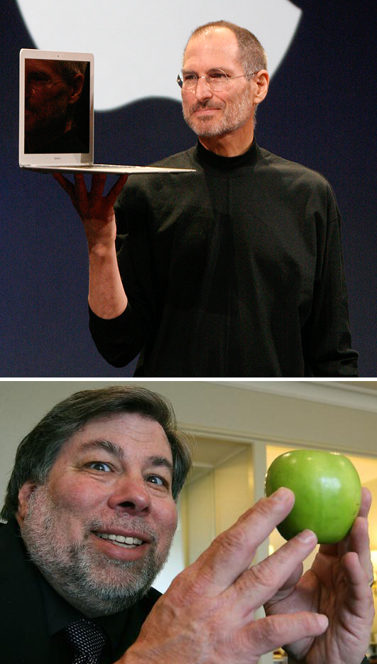
El Mac OS (Macintosh operating system) és un sistema operatiu creat per Apple Computer per a ordinadors Apple Macintosh. El Mac OS va ser el primer sistema operatiu comercial a incloure una interfície gràfica d’usuari. Aquesta primera versió va sortir l’any 1984 amb el Macintosh 128k. L’equip del Macintosh era format, principalment, per Bill Atkinson, Jef Raskin i Andy Hertzfeld.
En els sistemes operatius Mac OS es poden distingir dues grans famílies:
Steve Jobs...
… va ser, juntament amb Steve Wozniak (a sota), un dels fundadors i encara és un dels alts càrrecs d’Apple Computer.
- Mac OS “clàssic”. Aquesta família inclou totes les versions del sistema, des de les aparegudes amb el primer Macintosh l’any 1984 fins al Mac OS 9 de l’any 2001.
- Mac OS X. Es tracta d’un sistema desenvolupat a partir del sistema operatiu NextStep, basat en BSD Unix, tot i que conserva la majoria de funcionalitats del Mac OS 9.
Cal reconèixer, també, que d’ençà l’adopció de l’arquitectura Intel, Apple va començar a donar suport a la instal·lació del sistema operatiu Windows als seus equips, mitjançant l’eina Boot Camp, que permet engegar el sistema amb qualsevol de les dues opcions.
El logo de l’empresa és una poma de la varietat Macintosh mossegada, en homenatge a Alan M. Turing, lògic i pioner de la ciència de la computació.
Ordinadors portàtils i ultraportàtils
La principal característica d’aquest tipus de dispositius és que la major part de components, sinó tots, es troben integrats a la carcassa. Això pot incloure la pantalla, el teclat, un dispositiu senyalador (generalment un ratolí tàctil [touchpad]), altaveus, bateria i dispositius d’emmagatzematge i comunicacions, tot a l’interior d’una unitat relativament lleugera. La bateria recarregable té generalment prou capacitat per fer funcionar l’ordinador durant dues hores o més sense necessitat d’haver-lo de connectar a la xarxa elèctrica. Per tal de recarregar la bateria només cal endollar el transformador a la xarxa el temps necessari.
La utilitat dels portàtils es basa en el fet que tot l’equip –teclat, monitor, torre i ratolí– és integrat a la caixa, cosa que els fa fàcils de transportar.
La majoria d’ordinadors portàtils actuals estan dissenyats en format petxina (figura), en la qual la pantalla es tanca sobre el teclat quan no s’utilitza l’ordinador. Això permet protegir-lo millor a l’hora d’emmagatzemar-lo o transportar-lo. En el cas dels tablet laptops hi ha un mecanisme que permet girar la pantalla de cara al teclat per apagar el sistema i girar-la de cara enfora per utilitzar-lo.
Un ordinador portàtil o de vegades simplement portàtil és un tipus d’ordinador dissenyat per ser transportat amb facilitat.
El nom notebook ...
… és el terme utilitzat en anglès per referir-se als ordinadors portàtils. Es refereix a la mida que és semblant a la d’un bloc de notes o llibreta.
La portabilitat és l’avantatge fonamental dels portàtils comparats amb els PC de taula. Portabilitat vol dir que un ordinador portàtil es pot utilitzar en molts llocs, no solament a casa o a l’oficina, sinó també durant un trajecte, en una cafeteria, a les aules i a les biblioteques, o a qualsevol altre lloc.
El nom en anglès laptop indica el fet que és un dispositiu prou petit i lleuger per posar-se’l a la falda (lap) mentre és utilitzat.
Però els portàtils tenen altres avantatges que es poden resumir en:
- Immediatesa. El fet de dur un ordinador portàtil significa tenir accés instantani a la informació dels arxius personals o de feina. La immediatesa permet una col·laboració millor entre els companys de feina o estudiants, en qualsevol moment.
- Connectivitat. La proliferació de xarxes sense fils Wi-Fi significa que un ordinador portàtil pot tenir fàcil accés a Internet o a una xarxa local sense deixar de ser mòbil.
- Mida. Els ordinadors portàtils són més petits que els PC estàndard. Això és beneficiós pel que fa l’espai; es tracta d’un avantatge, per exemple, en apartaments petits i residències d’estudiants. Quan no s’utilitza, un ordinador portàtil es pot simplement tancar i desar.
- Baix consum d’energia. Els ordinadors portàtils són diverses vegades més eficients en termes de consum d’energia que els de taula. Un ordinador portàtil normalment utilitza 20-90 W, en comparació dels 100-800 W dels equips de taula. Això pot ser especialment beneficiós en el cas de les empreses (on s’utilitzen a la vegada centenars d’ordinadors personals, perquè permet multiplicar el potencial d’estalvi).
- Silenci. Els ordinadors portàtils sovint són més silenciosos que els equips de taula, a causa de l’ús de components menys potents, que comporten una producció de calor inferior.
- Autonomia. Un ordinador portàtil carregat pot funcionar diverses hores en cas d’un tall d’energia gràcies a la bateria que porta incorporada i, a més, no es veu afectat per les interrupcions del subministrament d’energia elèctrica ni per les baixades de tensió. Un PC de taula, en canvi, necessita un SAI per enfrontar-se a les interrupcions breus, a les baixades i als pics de tensió. Aconseguir un temps d’autonomia de tan sols 20-30 minuts per a un PC de taula requereix un SAI gran i costós.
- Tot inclòs. Dissenyats per ser traslladables, els ordinadors portàtils tenen tot el maquinari integrat en el xassís. En el cas dels ordinadors de taula (excepte els de carcassa integrada o all-in-one), el maquinari es divideix en diversos components i això comporta tenir un munt de cables a l’escriptori.
Originalment, els ordinadors portàtils no estaven considerats un segment important del mercat informàtic, sinó que es consideraven útils per a aplicacions especialitzades, com les militars o el sector comercial de vendes i finances. Avui dia, però, s’utilitzen tant els ordinadors portàtils com els de sobretaula o de taula, tant en l’entorn d’empresa com per a ús domèstic.
Tipus de portàtil segons la mida
La classificació d’ordinadors portàtils segons la mida inclou, d’una manera inherent, unes prestacions superiors o inferiors segons la mida que tingui l’equip. És evident que com més espai tingueu per utilitzar components, també podreu aspirar a una capacitat superior de processament, emmagatzematge o comunicació.
Una enumeració dels ordinadors portàtils més utilitzats és la següent:
- Reemplaçament d’escriptori (desktop replacement). Un ordinador de reemplaçament d’escriptori és un ordinador portàtil que proporciona tota la funcionalitat d’un equip de sobretaula, encara que continua oferint la possibilitat de traslladar-lo amb facilitat. Sovint es tracta d’ordinadors portàtils d’una mida i un pes grans. A causa d’aquesta mida més gran, és normal que incloguin components més potents que altres portàtils, i una pantalla d’una mida també gran, encara que disposaran, en canvi, de menys capacitat de bateria, a causa del seu enfocament “no portàtil”.
- Notebook. Aquest model es refereix als ordinadors portàtils més coneguts, de mida mitjana i pensats per ser traslladats però per poder-hi treballar amb comoditat. Les mesures d’un portàtil de tipus notebook, que són els més habituals, acostumen a ser entre 18 i 38 mm de grossor i entre 27 x 22 cm –amplada per llargada– (amb pantalla de 13”) i 39 x 28 cm (amb pantalla de 17“). Aquests portàtils pesen entre 1,4 i 5,4 kg segons els components i l’èmfasi que hagi posat el fabricant en el rendiment energètic.
- Tablet PC. En termes generals, un tablet PC es refereix a un ordinador portàtil equipat amb una pantalla tàctil, que s’haurà d’utilitzar amb un llapis digital, o amb els dits, enlloc de fer-ho amb el teclat i el ratolí. Aquests dispositius s’utilitzen sovint en llocs on no es pràctic utilitzar els portàtils convencionals. El sistema operatiu més utilitzat és Windows XP Tablet PC Edition, una versió de Windows XP Professional, que afegeix funcionalitat tàctil. Windows Vista i Windows 7 també inclouen la funcionalitat adequada per poder ser instal·lats en aquests dispositius. També es pot instal·lar Linux en aquests dispositius, o fins i tot trobar-l’hi instal·lat.
- Subnotebook o netbook. Un netbook és un tipus de portàtil també anomenat de vegades ultraportàtil, dissenyat i publicitat fent èmfasi en la portabilitat (mida petita, pes reduït i bateria més duradora) i que tot i així manté una potència de processament equivalent a la d’un ordinador de sobretaula (figura). Habitualment, els netbook són més lleugers (poden pesar entre 1 i 2 kg) i petits que els portàtils normals (les pantalles oscil·len entre 7” i 11“), i la bateria pot durar fins a 10 hores. Sovint no porten unitat òptica. El nom netbook fa referència al seu ús més comú que és la navegació per Internet i a la utilització com a dispositius de comunicacions. Entre els sistemes operatius més utilitzats s’inclouen Linux, Windows XP i Windows 7. Destaquen, també, pel seu baix preu ateses les funcionalitats i portabilitat que ofereixen.
El maquinari d'un portàtil
Els components fonamentals d’un portàtil són similars en funcions als seus equivalents de taula, però miniaturitzats per tal d’adaptar-los a l’ús mòbil, i dissenyats per consumir menys energia elèctrica. A causa d’aquests requeriments addicionals, els ordinadors portàtils habitualment tenen un rendiment inferior si se’ls compara amb els components de taula d’un preu similar. A més, els límits pel que fa a mides, potència i refrigeració dels portàtils en limiten també el rendiment màxim.
En els recursos de contingut del web trobareu enllaços a diversos fòrums amb consells i ressenyes útils a l’hora d’adquirir un portàtil.
Motorola i IBM van produir els processadors dels primers models de portàtils Apple basats en arquitectura PowerPC.
Els components de maquinari dels ordinadors portàtils, amb referència als mateixos components de taula, són els següents:
- Placa base: les plaques base de portàtil no se solen ajustar a un factor de forma estàndard com les dels ordinadors de taula (ATX, micro-ATX), sinó que són models propietaris del fabricant. A més, i també a diferència d’aquests darrers, no tenen les mateixes ranures d’expansió per raons de mida. En alguns casos podem trobar espai per a alguna targeta mini-PCI, però normalment l’única expansió possible s’ha de donar mitjançant USB, ExpressCard o algun format propietari. La majoria de funcions, com els controladors d’emmagatzematge, la xarxa, la targeta de so i de vídeo, etc., són integrades en la placa.
- Unitat central de processament (central processing unit o CPU): els processadors dels portàtils estan pensats per tenir una despesa energètica més baixa i produir menys calor que els seus equivalents de sobretaula. Hi ha una àmplia gamma de CPU dissenyades per a aquest segment de mercat tant d’Intel (Pentium M, Celeron M, Intel Core i Intel Core 2 Duo), AMD (Athlon, Turion 64 i Sempron), VIA Technologies, Transmeta i d’altres. Alguns portàtils tenen la possibilitat de canviar-ne el processador, però a la majoria dels casos aquest és soldat a la placa base i, per tant, no es pot substituir.
- Memòria (RAM): els portàtils utilitzen normalment mòduls de memòria SO-DIMM, d’aproximadament la meitat de la mida que tenen els DIMM de sobretaula. No sempre són fàcilment accessibles a l’usuari i de vegades pot arribar a ser molt complicat accedir a la ranura. El rang de capacitats pot anar des d’1 GB fins a 4 GB en els models de mida més gran.
- Targetes d’expansió: sovint trobareu als portàtils un compartiment de PC Card (conegut abans com a PCMCIA) o també d’Express Card, que permet afegir funcionalitats a l’ordinador. També s’utilitzen ampliacions internes com mini-PCI i el seu successor, PCI Express mini.
- Pantalla: la majoria d’ordinadors portàtils disposen d’una pantalla que oscil·la entre les 12” i les 19“ (inferior en el cas dels netbooks). Segons el model, la forma pot ser estàndard (5:4) o panoràmica (16:9).
- Dispositius òptics: en ordinadors de taula el més habitual és un lector/enregistrador de discos CD/DVD. Darrerament és més comú trobar-hi dispositius Blu-ray2. Els de mida més petita, com els ultraportàtils o els netbooks, exclouen la unitat òptica en favor d’altres solucions, com l’USB.
- Emmagatzematge intern: els discos durs per a portàtils són més petits que els d’ordinador de sobretaula (2 ½” o 1,8“). En alguns casos s’utilitzen discos de tecnologia flaix, més cars però també més ràpids, lleugers i eficients que els seus equivalents magnètics. Les mides que més es troben actualment van de 64 GB a 250 GB.
- Dispositius d’entrada de dades: el dispositiu apuntador més comú que trobarem és el ratolí tàctil i s’utilitza per controlar la posició del punter a la pantalla. El teclat també és integrat i tindrà un nombre superior o inferior de tecles segons la mida que tingui. També es poden connectar a l’equip un teclat i un ratolí externs.
- Ports: en els portàtils podem trobar diversos ports USB, un port per a monitor extern (VGA o DVI), connectors d’àudio d’entrada i sortida, i una presa de xarxa Ethernet. De vegades, hi podem trobar altres connectors de vídeo per connectar-los a un televisor.
- Estació d’acoblament (docking station): accessori per a ordinador portàtil que conté ports, ranures d’expansió i compartiments per a dispositius fixos o extraïbles. S’hi pot connectar i desconnectar fàcilment un ordinador portàtil (figura), de manera que aquest es pot utilitzar com si fos un PC de sobretaula, ja que inclourà també teclat, ratolí i connexions a la xarxa.
Un format propietari...
… o tancat és un disseny protegit per una patent o drets d’autor. El contrari d’un format propietari és un format obert, que no imposa restriccions a l’usuari final, sinó que li permet conèixer-ne el disseny i fer-hi modificacions.
Si l’ordinador no és de gamma alta, la controladora de gràfics pot limitar l’ús dels portàtils en aplicacions amb un ús intensiu de gràfics com els jocs.
- 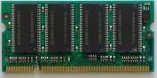
- Memòria SO-DIMM
La font d'alimentació d'un portàtil
Els portàtils utilitzen típicament una bateria recarregable interna que es carrega utilitzant una font d’energia externa (o transformador). La font pot carregar la bateria i alimentar l’ordinador a la vegada. Quan la bateria està totalment carregada, el portàtil continuarà funcionant amb la xarxa elèctrica.
Les estacions d'acoblament...
… es van utilitzar sobretot a empreses, per oferir funcionalitats afegides al portàtil, i van esdevenir menys comunes a mesura que els ordinadors portàtils van anar guanyant en connectivitat integrada (USB, Firewire).
Algunes bateries...
… permeten utilitzar un ordinador portàtil fins a 24 hores sense interrupció amb una despesa energètica mitjana, però els preus encara són molt elevats.
Els ordinadors portàtils necessiten una bateria per tal de poder funcionar sense estar connectats a la xarxa elèctrica. Els actuals utilitzen bateries d’ions de liti o de polímer de liti. La duració d’aquestes bateries en funcionament de l’equip és entre dues i cinc hores d’ús moderat, però baixarà si utilitzeu l’equip per a tasques que requereixin més desgast energètic, per exemple, si hi ha moltes lectures i escriptures en disc dur. El rendiment de les bateries decreix a poc a poc amb el temps, fins que s’imposa el reemplaçament de la bateria en un temps que pot anar d’un a tres anys.
L’efecte memòria de les bateries es produeix quan no s’utilitza la bateria fins a esgotar-ne tota l’energia i es passa a carregar-la. Això pot fer que la bateria perdi capacitat màxima de càrrega.
Si es treballa amb el portàtil durant moltes hores en la mateixa ubicació, és aconsellable treure-li la bateria per allargar-ne el cicle de vida, ja que mentre està connectada se’n produeix un desgast de la vida útil.
Sistemes operatius d'ordinador portàtil
Atès que la seva capacitat de treball és molt similar a la dels ordinadors de taula, els ordinadors portàtils utilitzen els mateixos sistemes operatius que els seus equivalents no portables.
- Microsoft Windows: els portàtils disposen de les versions més noves del sistema, tan aviat com surti al mercat. Hi ha un notable parc de portàtils en funcionament amb Windows XP instal·lat. Quant al mercat, la major part de sistemes disposen de Windows Vista, en alguna de les seves versions, mentre que a poc a poc van apareixent més models que ja incorporen Windows 7, d’ençà que ha sortit al mercat. La particularitat de les instal·lacions de Windows als portàtils és determinada pel fet que es tracta, en gran part, de sistemes amb marca (HP, Acer, Dell, Asus…). Això fa que el fabricant distribueixi el disc a la seva manera. Habitualment, hi trobareu una partició amagada amb els fitxers de restauració del sistema, amb tots els programes que el fabricant inclou a les màquines (eines ofimàtiques d’avaluació, programes de diagnosi del sistema…). Per contra, el fabricant no acostuma a incloure-hi els discos d’instal·lació del sistema operatiu, com seria desitjable.
- GNU/Linux: alguns fabricants com Dell han optat per oferir algun dels seus models de baix cost amb Linux preinstal·lat, amb la finalitat d’arribar també als usuaris que volen aquesta opció. D’altra banda, pràcticament a qualsevol portàtil actual, s’hi pot instal·lar Linux amb més o menys dificultats. Quant als netbooks, han estat una veritable revolució per a aquest sistema, ja que molts fabricants com, per exemple, Asus, Dell o HP han ofert models d’aquest tipus de sistema amb distribucions de Linux personalitzades. En alguns casos, es tracta d’interfícies simplificades del sistema operatiu (figura) amb accés a les opcions més utilitzades d’ofimàtica i connectivitat, de manera que tingui la capacitat d’arribar a un nombre més gran d’usuaris. Aquest tipus de menú s’inspira en les interfícies de telèfon mòbil, ja conegudes per usuaris de tot tipus.
- Mac OSX: els portàtils de l’empresa Apple disposen de preinstal·lacions del sistema operatiu de l’empresa de la “poma mossegada”, adaptades a aquest tipus de sistema. Així és en el MacBook i el MacBook Pro, i també al MacBook Air. Mitjançant l’eina “BootCamp” Apple també dóna suport a la instal·lació dels sistemes operatius Windows en els seus equips portàtils.